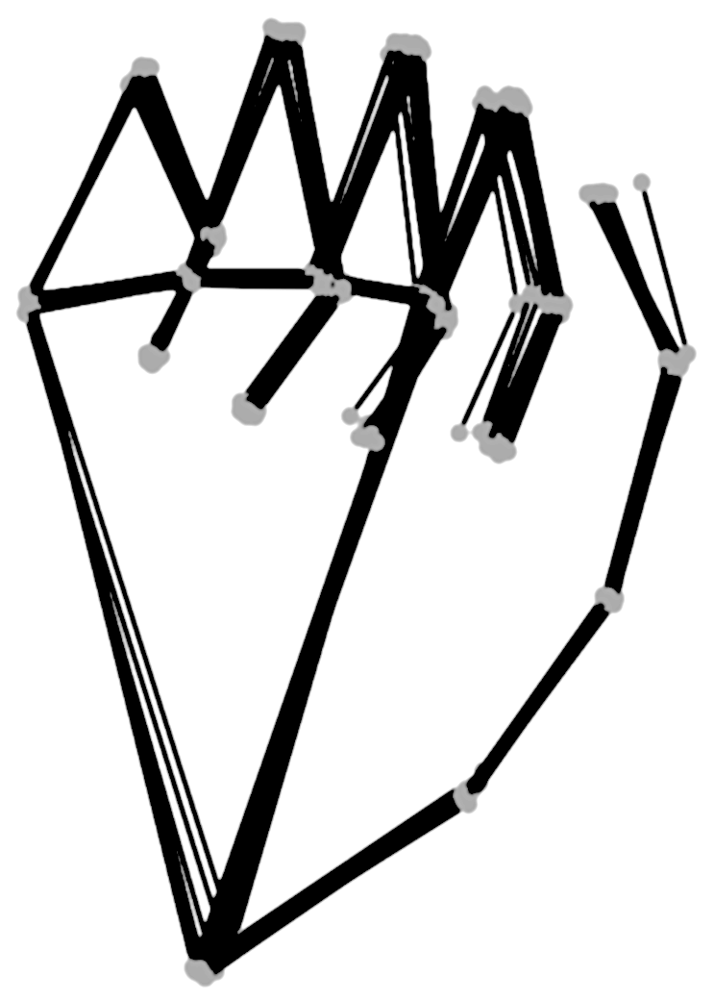

history
Rock, paper, scissors is an American variation of the Japanese game "Jan-ken-pon." Jan-ken, itself, is a popular example of a sansukumi-ken—a style of three-move hand-game, with origins in Ancient China. For more information click here!
-
how-to play
-
rock
Clasp fingers, pointing towards palm.
-
paper
Raise hand and point all fingers away from palm.
-
scissors
Clasp thumb, ring, and pinky fingers. Leave index and middle fingers open.